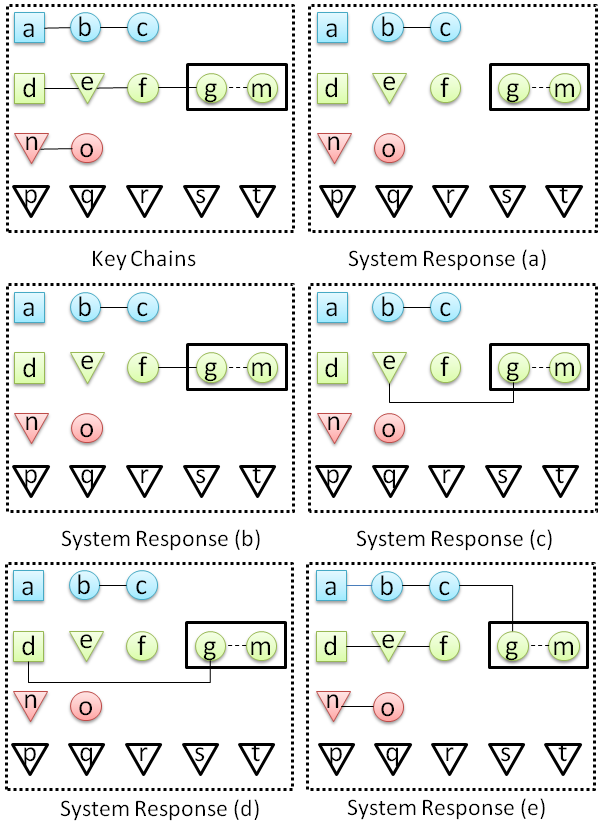

Linguistically Aware Coreference Evaluation Metrics
Chen Chen and Vincent Ng.
Proceedings of the 6th International Joint Conference on Natural Language Processing, pp. 1366-1374, 2013.
Click here for the PostScript or PDF version.
The talk slides are available here.
Abstract
Virtually all the commonly-used evaluation metrics for entity coreference resolution are linguistically agnostic, treating the mentions to be clustered as generic rather than linguistic objects. We argue that the performance of a mention coreference resolver cannot be accurately reflected when it is evaluated using linguistically agnostic metrics. Consequently, we propose a framework for incorporating linguistic awareness into commonly-used coreference evaluation metrics.
Software
An implementation of the linguistically aware coreference evaluation metrics described in the paper is available from
this page.
BibTeX entry
@InProceedings{Chen+Ng:13b,
author = {Chen Chen and Vincent Ng},
title = {Linguistically Aware Coreference Evaluation Metrics},
booktitle = {Proceedings of the 6th International Joint Conference on Natural Language Processing},
pages = {1366--1374},
year = 2013}
